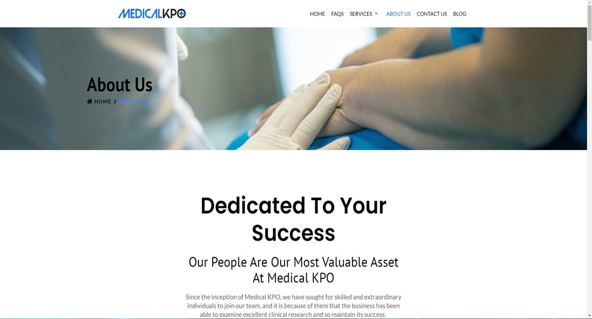
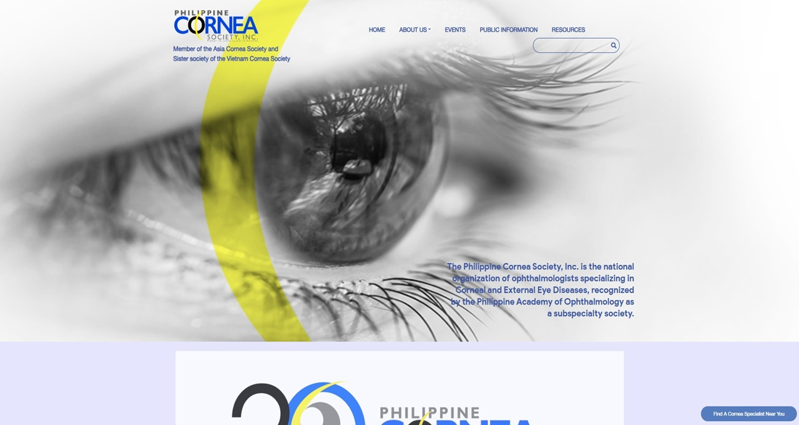
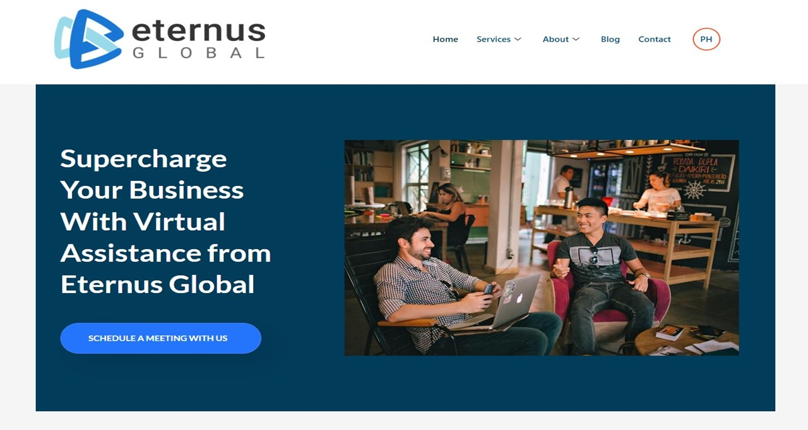
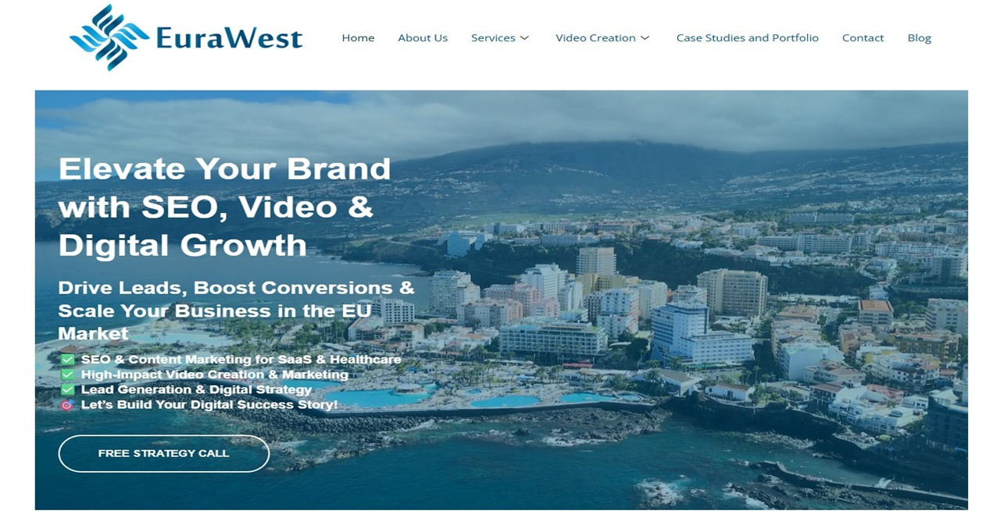
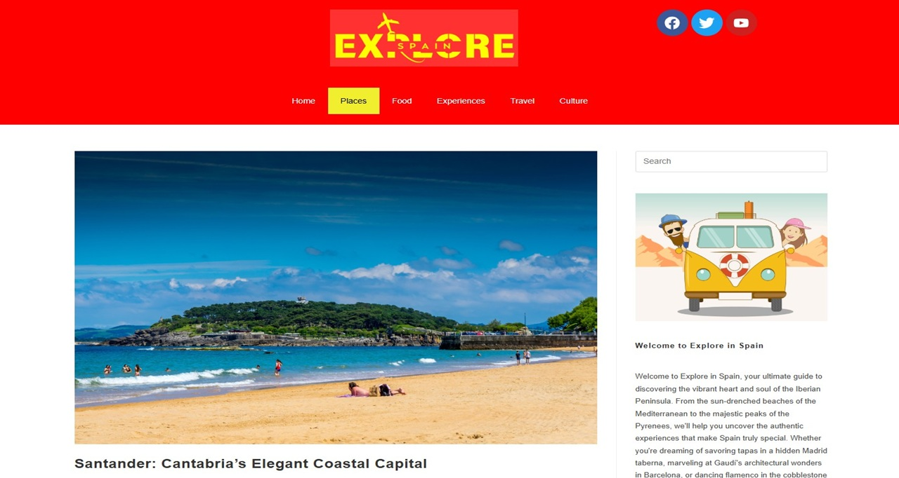
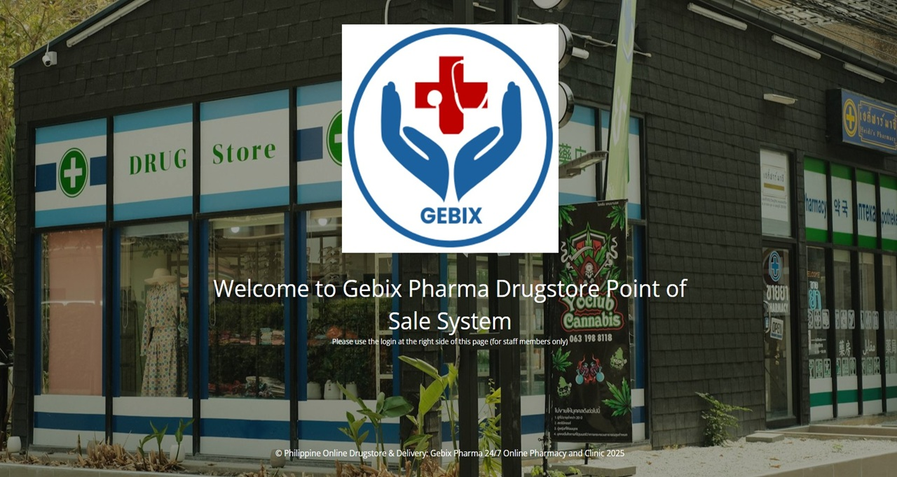

I build fast, conversion-ready WordPress websites — from first concept to full launch. 3+ years delivering real projects across healthcare, travel, e-commerce, and corporate niches.
I don't just build websites — I build online presences that help businesses get found, look credible, and turn visitors into customers.
With over 3 years of project-based experience building responsive, SEO-optimized WordPress websites, combined with 3+ years in technical support and client communication within a fast-paced BPO environment, I bring a rare mix of design skill, technical depth, and people-first thinking to every project.
I handle the full project lifecycle — from discovery call to launch and beyond. That means one reliable point of contact who understands both the design and the business goals behind it.
Currently in my 4th year of a BS in Information Technology at Iloilo State University, graduating 2026 — keeping my skills constantly sharpened with the latest in web and software development.
Visually sharp sites built around your brand goals — not generic templates
Every site I build is optimized for speed and search rankings from day one
Trained in high-volume support — you'll always know where your project stands
I don't disappear after delivery — maintenance and updates are part of the deal
Custom page building, theme customization, plugin integration, and full-site development using Elementor Pro
Custom widgets, CSS overrides, responsive layouts, and lightweight scripting to extend Elementor's capabilities
On-page optimization, keyword research, plugin setup, and monthly performance reporting using real data
cPanel management, DNS configuration, staging environments, and zero-downtime migrations between hosts
Core Web Vitals optimization, image compression, caching, and CDN setup for fast-loading sites that retain visitors
Web copy, blog posts, and social media content written to rank in search and resonate with real audiences
Self-employed · Project-based · 3+ years
BPO / Outsourcing Company · Full-time · 3+ years
Custom, brand-aligned websites built with Elementor Pro — from single landing pages to full multi-page builds tailored to your goals
Ongoing plugin updates, security patches, uptime monitoring, and performance checks — monthly retainers available
Full on-page SEO audit, keyword research, meta and schema markup setup, and monthly reporting — so your site actually gets found
Blog posts, service page copy, and social media content written to rank in search and convert your target audience
Host-to-host migrations with zero data loss, minimal downtime, and full DNS and email reconfiguration handled end-to-end
GA4 setup, Search Console integration, and monthly performance reports with plain-English takeaways and clear next steps






"Edilmar delivered our medical website on time and it looked exactly how we envisioned it. Clean, professional, and loads fast on mobile. Will definitely hire again."
"Traffic to our blog doubled within two months after Edilmar overhauled our SEO and cleaned up the site structure. A reliable professional who knows his craft."
"Great communicator, patient with revisions, and genuinely understands what a small business needs. Everything was delivered on time and within budget."
Iloilo State University of Fisheries Science and Technology
2022 – 2026 · 4th Year Student · Graduating 2026
Have a project in mind? I'd love to hear about it. I typically respond within 24 hours — let's see what we can build together.
Iloilo City, Philippines (UTC+8)